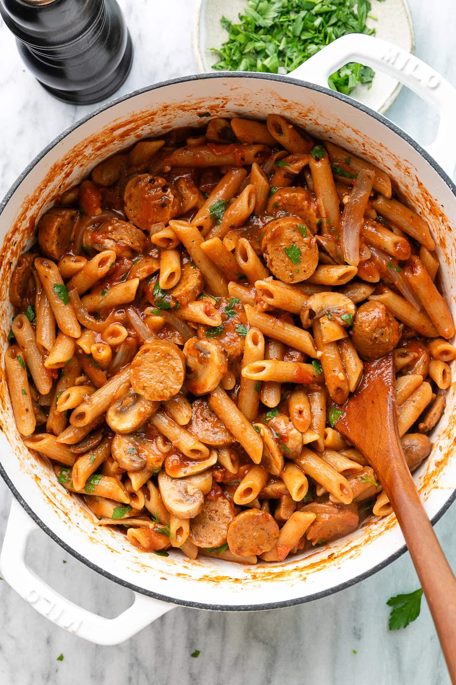

Vegan Sausage Pasta

A comforting, rich, and flavorful pasta dish using plant-based Italian sausages and a creamy tomato sauce.
Back to RecipesIngredients
- 300g pasta (penne or rigatoni recommended)
- 2 Vegan Italian Sausages, sliced
- 1 tbsp olive oil
- 1/2 cup vegetable broth
- 1 can (400g) crushed tomatoes
- 2 cloves garlic, minced
- 1/4 cup nutritional yeast (for cheesy flavor)
- Salt, pepper, and fresh basil to taste
Steps
- Cook pasta according to package directions. Reserve 1/2 cup of pasta water before draining.
- While pasta cooks, heat olive oil in a large pan and sauté sliced vegan sausages until browned. Remove and set aside.
- In the same pan, sauté minced garlic for 1 minute. Add crushed tomatoes and vegetable broth; simmer for 10 minutes.
- Stir in nutritional yeast, salt, and pepper. Add the cooked pasta and sliced sausage to the sauce.
- If the sauce is too thick, stir in reserved pasta water until desired consistency is reached. Serve immediately and garnish with fresh basil.